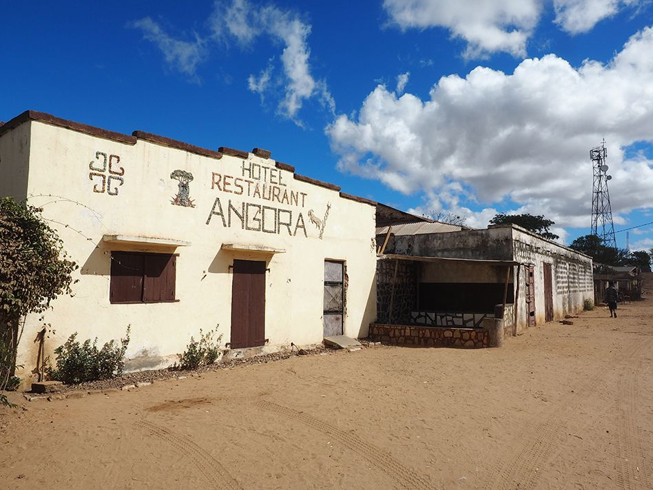
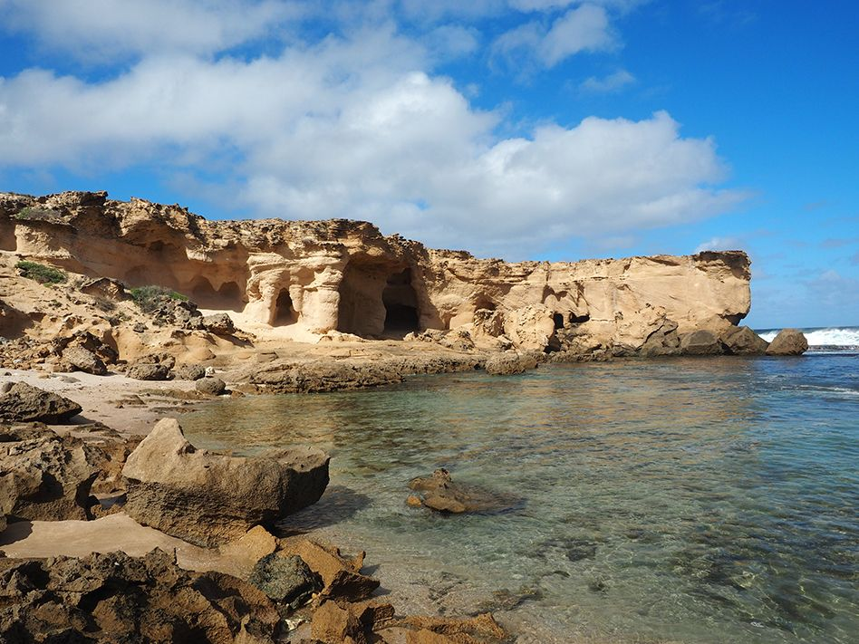
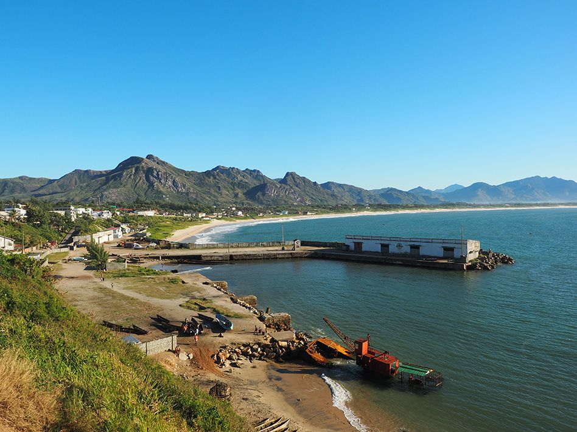

Madagaskar mal anders: Von Tulear nach Fort Dauphin
Routenverlauf: Tulear-Betioky-Ampanihy-Lavanono-Berenty-Fort Dauphin
Reise von Tulear nach Fort Dauphin:
Tag 1

Treffen im Hotel Residence Eden Sarodrano, das eine Stunde südlich von Tulear auf der Piste nach St. Augustine liegt. Abreise um 10 Uhr 30 nach Andranovory – es erwarten uns 95 Kilometer schlechte Piste (etwa drei Stunden Fahrt) bis zum Ort Betioky. Dort Übernachtung im einfachen, aber sauberen Bungalowhotel Tsaramandroso (Bungalow mit eigenem Bad).
Tag 2
Frühe Abfahrt, sodass genug Zeit ist zum Nationalpark Bezaha Mahafely sowie abends wieder zurück zu fahren. Bis dorthin sind es 35 Kilometer auf schlechter Piste (Fahrtzeit etwa zwei Stunden einfach). Der Service im Nationalpark ist schlecht organisiert – wir sollten nach unserer Ankunft vor Ort etwa 1,5 Stunden auf unseren lokalen Guide warten, der jedoch nicht kam. Der Gast hat schliesslich eine einstündige Nationalparktour mit dem Reisevermittler gemacht, welcher eine Stunde nach unserer Ankunft kam. Die Tour war dennoch gut. Zweite Nacht im Hotel Tsaramandroso in Betioky.
Tag 3

Abfahrt in den 135 Kilometer entfernten Ort Ampanihy auf einer schlechten Piste, die letzten 50 Kilometer davon auf sehr schlechter Piste (5 Stunden Fahrt). Nach der Ankunft haben wir den heiligen Baobab besichtigt, der 30 Kilometer von Amanihy entfernt steht (1 Stunde Fahrt ab Amanihy).
Dort muss man einen lokalen Guide nehmen, um – nach dessen Aussage – keine bösen Überraschungen mit den Dorfbewohnern zu erleben. Der Guide kostete doppelt so viel wie die Übernachtung im Bungalow für den Gast, und das nur für die Begleitung im Auto ohne zu berechnen, dass er auch noch Geld von den Bauern vor Ort für die “Fomba” verlangt.
Der Weg bis zum heiligen Baobab ist schwer zugänglich sowie sehr eng, so dass wir ein Messer benutzen mussten, um Zweige aus dem Weg zu schneiden. Der Ort an sich ist wenig spektakulär und es ist auch keine Madagaskarboa im Inneren des Baobabs, wie es im Reiseführer erwähnt wird. Aufgrund der ganzen Verzögerungen (schlechte Piste, Verhandlungen zwischen den Dorfbewohnern…) kamen wir erst spät zurück nach Amanihy. Wir übernachten im einfachen Hotel Angora (Bad mit Wassereimer im Zimmer).
Tag 4
Abfahrt von Amanihy Richtung Lavanono. Die Piste zwischen Ampanihy sowie Tranoroa (40 Kilometer) ist sehr schlecht, so dass sogar der Gast jammert…wir haben 2,5 Stunden gebraucht. Für die 95 Kilometer gesamte Strecke waren wir 4 Stunden unterwegs. Übernachtung im Hotel Chez Gigi. Das Hotel hat eine gute Lage, ist jedoch ziemlich teuer aufgrund der obligatorischen Halbpension. Es bietet eher wenig Komfort mit öffentlichen Sanitäranlagen mit Brackwasser aus dem aussenliegenden Reservat sowie den üblichen Wasserausfällen des Südens. Normalerweise empfängt das Hotel nur nach Reservierung Gäste, damit es all die nötigen Lieferungen planen kann.
Tag 5

Abfahrt zum Park Cap Sainte Marie: um dorthin sowie wieder zurück zu gelangen fahren wir insgesamt 60 Kilometer Piste (2 Stunden Fahrtzeit). Vor Ort bleiben wir etwa drei Stunden. Der Service hier im Park ist besser organisiert und es gibt auch viel mehr zu sehen. Abends Rückfahrt nach Lavanono sowie eine zweite Übernachtung im Hotel Chez Gigi.
Tag 6
Abfahrt in Richtung Berenty (185 Kilometer auf schlechter Piste, 5 Stunden Fahrtzeit). Nach unserer Ankunft machen wir eine Nachtführung im Berenty Park. Übernachtung im Hotel Berenty Lodge. Der Service sowie Komfort im Hotel ist nicht nennenswert. Die Führung ist im Preis des Bungalows inbegriffen. Unsere Reservierung wurde von Mr Gigi (letztes Hotel) vorgenommen, da er eng mit SHTM zusammengearbeitet hat. Ohne diese wären wir nicht empfangen worden.
Tag 7
Besichtigung des Berenty Parks mit einem deutschsprechenden Guide, der vom Hotel vermittelt wurde. Zweite Nacht im Hotel Berenty Lodge.
Tag 8

Abfahrt nach Fort Dauphin (85 Kilometer Piste, 3 Stunden Fahrtzeit). Beim Stopp am Nationalpark Andohaela stellten wir fest, dass es dort weder Unterkunft noch Restaurant gibt, sondern lediglich Zeltplätze. (Aus diesem Grund hatten wir entschieden, in Berenty zu übernachten.) Der Gast unternahm eine dreistündige Tour im Nationalpark Andohaela und war von dieser sehr angetan, vor allem vom Niveau der Erklärungen zu Flora und Fauna durch den lokalen Guide. Übernachtung im Hotel Le Dauphin.